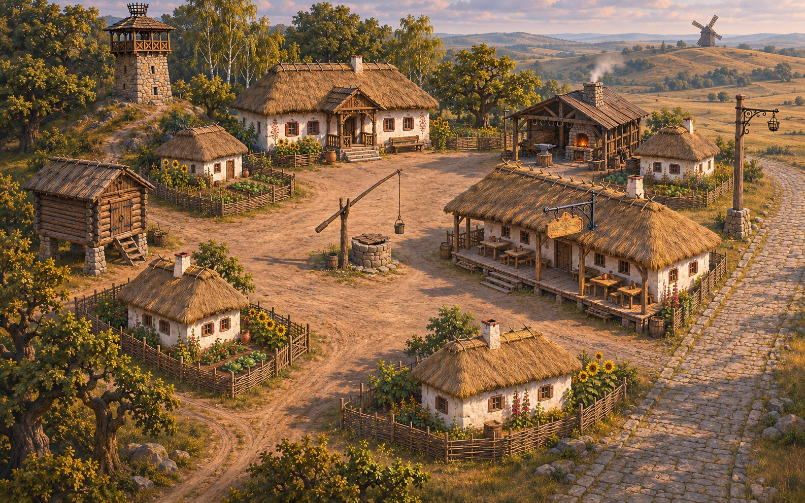

Куренівка · Розділ 1 · Мережа

Вісті для кожної хати
Великим шляхом щодня біжать вісті з усього королівства. До Вістової вежі вони доходять, а далі ні до кого: у хатах тихо. Староста Мирон чекає на тебе біля своєї хати.
Іди й говориКлацай по землі й по людях.
ХронікаКнига внизу. Там відповіді на всі питання.
БітиВідповів з першого разу: 8 біт, з другого: 4.